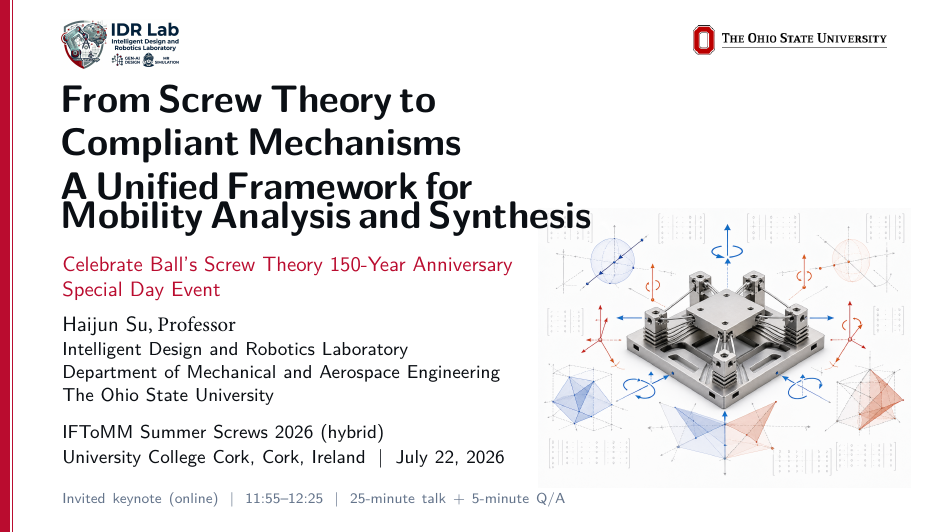
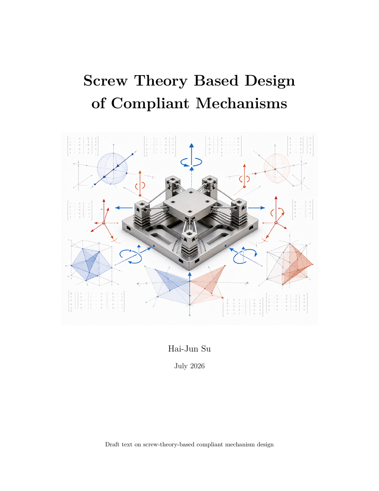

From Screw Theory to Compliant Mechanisms: A Unified Framework for Mobility Analysis and Synthesis
Invited Keynote, IFToMM Summer Screws 2026, University College Cork, Cork, Ireland — July 22, 2026

Overview
Presented for the 150-year anniversary of Ball’s screw theory, this invited keynote traces a direct line from classical screw geometry to modern compliant mechanism design. The central idea is that mobility is best understood as a subspace before it is reduced to a number: twist spaces describe desired motions, reciprocal wrench spaces describe constraints, and compliance matrices quantify the separation between intended and parasitic motion.
The presentation develops a common language for analysis and synthesis. It shows how wire, blade, and notch flexures can realize screw-system constraints; how serial, parallel, and hybrid modules combine; and how designers can move from qualitative freedom-and-constraint reasoning to algebraic rank, null-space, compliance, and stiffness calculations.
Presentation Video
Companion Electronic Book
Screw Theory Based Design of Compliant Mechanisms is a graduate-level electronic text accompanying the keynote. It develops the subject through a consistent screw-coordinate convention and gives readers a path from desired motion specifications to reciprocal constraints, physical flexure realizations, mechanism composition, and quantitative compliance or stiffness models.
- Constraint-based design and flexures as intentional constraints
- Twist and wrench coordinates, reciprocity, and coordinate transformations
- Mobility analysis of serial, parallel, and hybrid compliant mechanisms
- Mobility synthesis and physical realization of constraint spaces
- Stiffness and compliance matrices for mechanism-level design

Resources
- Keynote slide deck: Haijun_Su_Summer_Screws_2026_Keynote.pdf
- Electronic book: screw_theory_compliant_mechanisms_book.pdf
- Presentation video: https://youtu.be/ZWzBD1lwnI0
BibTeX
@misc{Su2026SummerScrews,
title = {From Screw Theory to Compliant Mechanisms: A Unified Framework for Mobility Analysis and Synthesis},
author = {Su, Hai-Jun},
howpublished = {Invited keynote at IFToMM Summer Screws 2026},
address = {University College Cork, Cork, Ireland},
month = {July},
year = {2026},
url = {https://su-idr-lab.github.io/projects/2026_summer_screw_keynote/index.html}
}